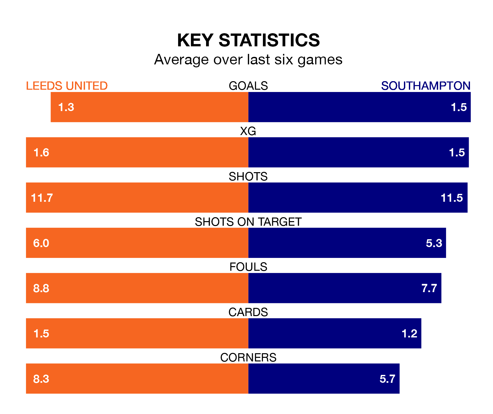

Leeds United host Southampton in Saturday lunchtime's match at Elland Road looking to bounce back from defeat last time out in EFL Championship.
Leeds, who sit third in the league after 45 games, fell to a 4-0 away defeat to Queens Park Rangers on April 26.
They face a Southampton side who also lost their last match, a 1-0 defeat to Stoke City, and who sit fourth in the table.
With 85 goals in 45 games so far this season, Southampton are the league's third-highest scorers with 1.9 goals per game. But they are conceding more than average too, letting in 62 goals at a rate of 1.4 per game.
Leeds are also above average scorers, with 1.8 goals per game, compared to a league average of 1.3. They have conceded 0.9 goals per game.
With Illan Meslier between the sticks, United can rely on one of the league's safest pair of hands. He has kept 18 clean sheets in his 43 appearances this season, and no 'keeper has prevented the opposition scoring more often in EFL Championship.
In the Saints' net, Gavin Bazunu has 11 clean sheets in 41 games. He has conceded a goal every 75 minutes, 40% more often than the 106 minutes between goals for Meslier.
In the last 10 years, Leeds and Southampton have played each other on seven occasions. Leeds won three of them, Southampton two, and they drew twice.
On average, Leeds scored 1.4 goals and the Saints 1.0 in those matches.
Their last meeting was on September 30, when Southampton won 3-1 at home.
The home side are in mixed form in EFL Championship, with two wins and a draw from their last six games.
With three wins and three losses over that period, the visitors' form is slightly better – they have taken nine points from 18, compared to Leeds's seven.
Saturday's match will be refereed by Matt Donohue, who has taken charge of 29 EFL Championship games so far this season, issuing two red cards and booking 125 players. He has awarded four penalties.
The last Leeds game Donohue refereed was a 2-0 away win against Plymouth Argyle on February 17. His last Southampton match was their 1-1 draw at home against Middlesbrough on March 29.
Updated: 12:00 (UTC), 02/05/24